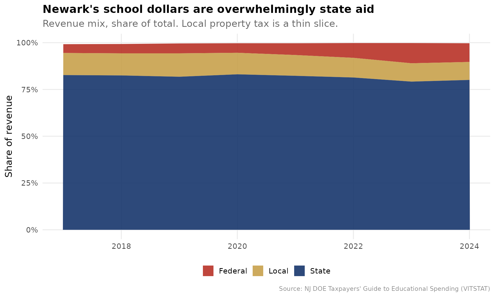
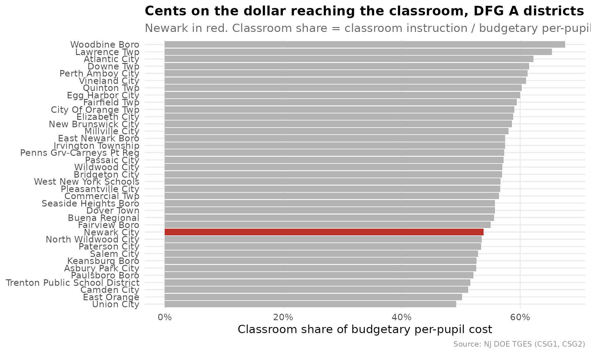
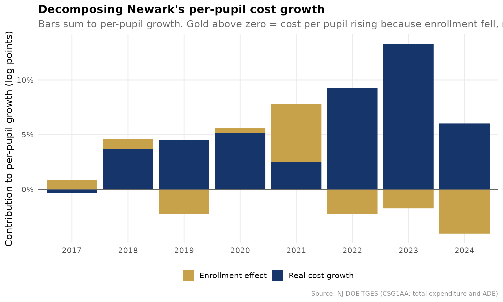
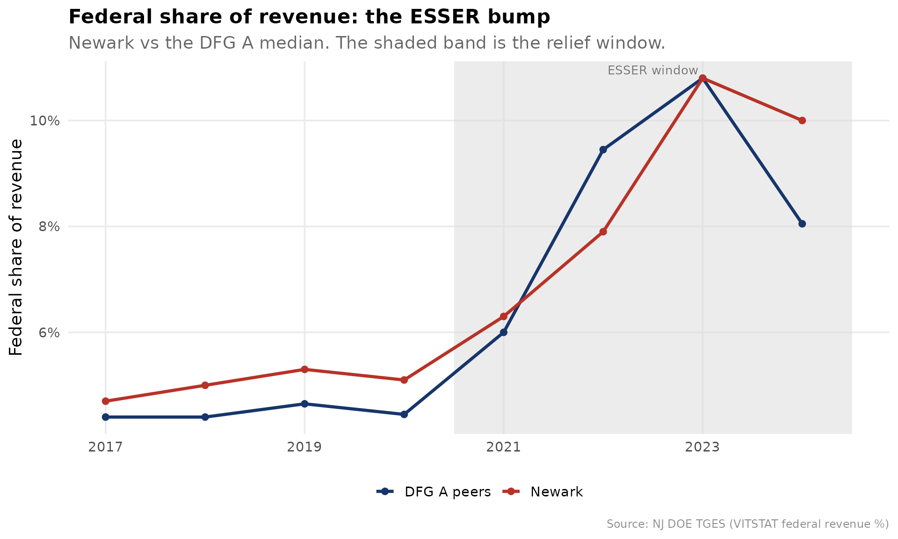
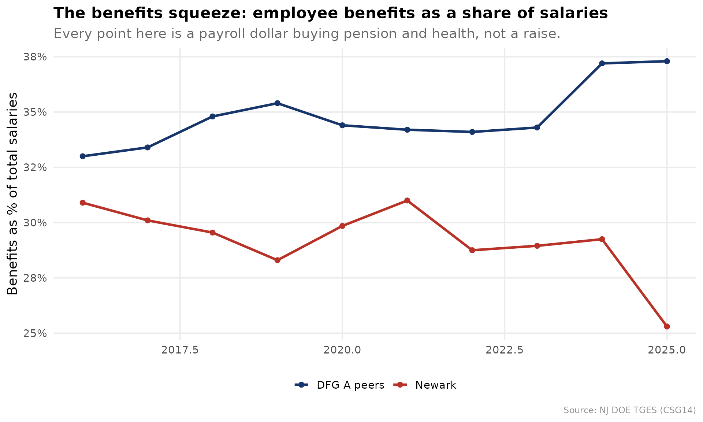
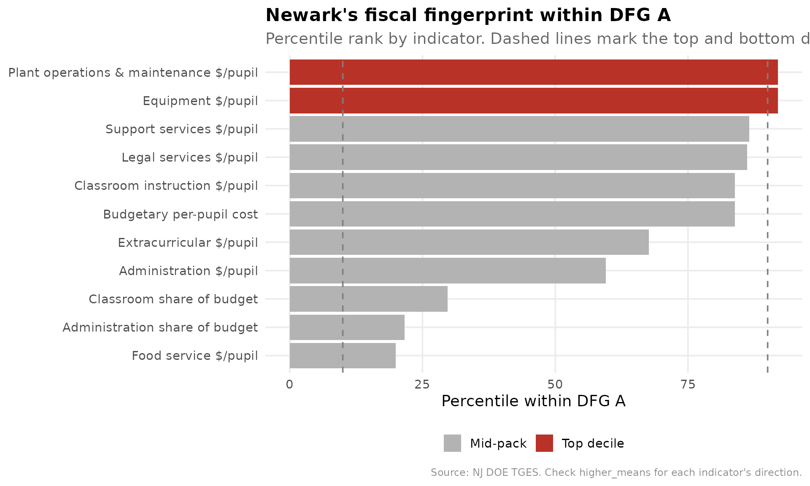

What Did Newark's Gains Cost? A DFG A Fiscal Brief
Source:vignettes/newark-fiscal-brief.Rmd
newark-fiscal-brief.Rmd
library(njschooldata)
library(ggplot2)
library(dplyr)
library(tidyr)
library(scales)
options(timeout = max(600, getOption("timeout")))
theme_nj <- function() {
theme_minimal(base_size = 14) +
theme(
plot.title = element_text(face = "bold", size = 16),
plot.subtitle = element_text(color = "gray40"),
plot.caption = element_text(color = "gray55", size = 9),
panel.grid.minor = element_blank(),
legend.position = "bottom"
)
}
nwk_navy <- "#16356B"
nwk_gold <- "#C8A14B"
nwk_teal <- "#16A085"
nwk_red <- "#B83227"
peer_gray <- "gray70"
NEWARK <- "3570"MarGrady Research’s Newark study proved that Newark’s outcomes climbed against the right yardstick: not the state as a whole, but District Factor Group A, the 37 highest-need communities in New Jersey (Camden, Trenton, Paterson, and the like). Its own list of open questions ends with the one it could not answer: what was the per-pupil spending trajectory, and was it cost-effective?
This brief points the same peer-benchmarking machinery at dollars.
Every chart below compares Newark to its DFG A peers, using the
comparative-fiscal toolkit in njschooldata
(tges_revenue_mix(), tges_composition(),
tges_real_growth(), tges_federal_exposure(),
tges_staffing(), tges_red_flags()), all built
on the Taxpayers’ Guide to
Educational Spending (TGES). It is a companion, not a verdict: TGES
is district-level, and a screen that flags where to look is not the same
as a finding.
# One multi-year object drives the whole brief. fetch_many_tges() returns a
# named list of years, each a list of tidy indicator tables. 2018-2025 spans a
# pre-pandemic baseline, the ESSER window, and enough actuals for growth math.
tgm <- fetch_many_tges(2018:2025)
#> [1] 2018
#> [1] 2019
#> [1] 2020
#> [1] 2021
#> [1] 2022
#> [1] 2023
#> [1] 2024
#> [1] 2025
# Attach DFG to any TGES frame by its 4-digit district_id (the same join
# tges_percentile_rank(peer = "dfg") uses internally). DFG A = highest need.
dfg_lk <- fetch_dfg() %>%
group_by(district_id) %>%
summarise(dfg = first(dfg), .groups = "drop")
with_dfg <- function(df) left_join(df, dfg_lk, by = "district_id")1. Whose money is it? Newark runs on state aid, not property tax
For a suburban homeowner the school budget is mostly their own
property tax. For Newark it is mostly Trenton’s.
tges_revenue_mix() decomposes VITSTAT into both the revenue
shares and the per-pupil dollars each source buys.
rev <- tges_revenue_mix(tgm) %>% with_dfg()
# Newark's latest-year mix, in cents-on-the-dollar and per-pupil dollars
newark_rev_latest <- rev %>%
filter(district_id == NEWARK, end_year == max(end_year)) %>%
select(end_year, total_pp, local_share, state_share, federal_share,
local_pp, state_pp, federal_pp)
stopifnot(nrow(newark_rev_latest) == 1)
newark_rev_latest
#> # A tibble: 1 × 8
#> end_year total_pp local_share state_share federal_share local_pp state_pp
#> <dbl> <dbl> <dbl> <dbl> <dbl> <dbl> <dbl>
#> 1 2024 34409 0.096 0.801 0.1 3303 27562
#> # ℹ 1 more variable: federal_pp <dbl>
# How does Newark's local (property-tax) share compare to DFG A peers?
dfg_a_local <- rev %>%
filter(dfg == "A", end_year == max(end_year)) %>%
summarise(
n = n(),
newark_local = local_share[district_id == NEWARK][1],
dfg_a_median_local = median(local_share, na.rm = TRUE)
)
dfg_a_local
#> # A tibble: 1 × 3
#> n newark_local dfg_a_median_local
#> <int> <dbl> <dbl>
#> 1 37 0.096 0.134
rev_long <- rev %>%
filter(district_id == NEWARK) %>%
select(end_year, Local = local_share, State = state_share,
Federal = federal_share) %>%
pivot_longer(-end_year, names_to = "source", values_to = "share")
stopifnot(nrow(rev_long) > 0)
ggplot(rev_long, aes(end_year, share, fill = source)) +
geom_area(alpha = 0.9) +
scale_y_continuous(labels = percent_format(accuracy = 1)) +
scale_fill_manual(values = c(Local = nwk_gold, State = nwk_navy,
Federal = nwk_red)) +
labs(
title = "Newark's school dollars are overwhelmingly state aid",
subtitle = "Revenue mix, share of total. Local property tax is a thin slice.",
x = NULL, y = "Share of revenue", fill = NULL,
caption = "Source: NJ DOE Taxpayers' Guide to Educational Spending (VITSTAT)"
) +
theme_nj()
The headline a taxpayer understands instantly: of Newark’s roughly $34,409 per pupil, only $3,303 comes from local property tax. The local share sits far below even its high-need DFG A peers, which is the whole logic of Abbott v. Burke: the state, not the city, writes the checks.
2. Newark spends near the top of DFG A, but a low share reaches the classroom
The most-cited efficiency proxy in school finance is “dollars to the
classroom.” tges_composition() builds the classroom share;
tges_percentile_rank() ranks it inside DFG A.
comp <- tges_composition(tgm, calc_type = "Budgeted")
# Rank classroom share within DFG A in the most recent budgeted year
latest_yr <- max(comp$end_year)
classroom_ranked <- comp %>%
filter(end_year == latest_yr) %>%
tges_percentile_rank("classroom_share", peer = "dfg") %>%
filter(dfg == "A")
stopifnot(nrow(classroom_ranked) > 0)
newark_classroom <- classroom_ranked %>%
filter(district_id == NEWARK) %>%
select(end_year, classroom_share, peer_percentile, peer_n)
newark_classroom
#> # A tibble: 1 × 4
#> end_year classroom_share peer_percentile peer_n
#> <dbl> <dbl> <dbl> <int>
#> 1 2025 0.538 29.7 37
# For contrast: where does Newark rank on total budgetary spend in DFG A?
spend_ranked <- tges_percentile_rank(
comp %>% filter(end_year == latest_yr),
"budgetary_pp", peer = "dfg"
) %>%
filter(dfg == "A", district_id == NEWARK) %>%
select(budgetary_pp, peer_percentile, peer_n)
spend_ranked
#> # A tibble: 1 × 3
#> budgetary_pp peer_percentile peer_n
#> <dbl> <dbl> <int>
#> 1 27050 83.8 37
plot_df <- classroom_ranked %>%
mutate(is_newark = district_id == NEWARK) %>%
arrange(classroom_share) %>%
mutate(rank_order = row_number())
stopifnot(sum(plot_df$is_newark) == 1)
ggplot(plot_df, aes(reorder(district_name, classroom_share), classroom_share,
fill = is_newark)) +
geom_col() +
coord_flip() +
scale_y_continuous(labels = percent_format(accuracy = 1)) +
scale_fill_manual(values = c(`TRUE` = nwk_red, `FALSE` = peer_gray),
guide = "none") +
labs(
title = "Cents on the dollar reaching the classroom, DFG A districts",
subtitle = paste0("Newark in red. Classroom share = classroom instruction / ",
"budgetary per-pupil cost, ", latest_yr, " budget."),
x = NULL, y = "Classroom share of budgetary per-pupil cost",
caption = "Source: NJ DOE TGES (CSG1, CSG2)"
) +
theme_nj()
Newark spends at the 84th percentile of DFG A on total budgetary cost per pupil, but only the 30th percentile of that dollar reaches a classroom (53.8%). High spend, low classroom share is exactly the pattern a board should be able to explain.
3. Is spending exploding, or is enrollment shrinking?
Per-pupil cost rises mechanically when enrollment falls, because
fixed costs spread over fewer students. tges_real_growth()
splits each year’s per-pupil growth into a real-cost component and an
enrollment (denominator) component that sum to the total.
rg <- tges_real_growth(tgm) %>%
filter(district_id == NEWARK) %>%
arrange(end_year)
stopifnot(nrow(rg) > 1)
rg %>%
select(end_year, per_pupil, per_pupil_growth,
real_cost_component, enrollment_component, enrollment_effect_share)
#> # A tibble: 9 × 6
#> end_year per_pupil per_pupil_growth real_cost_component enrollment_component
#> <dbl> <dbl> <dbl> <dbl> <dbl>
#> 1 2016 22735 NA NA NA
#> 2 2017 22857 0.00537 -0.00331 0.00864
#> 3 2018 23938 0.0473 0.0368 0.00939
#> 4 2019 24494 0.0232 0.0454 -0.0224
#> 5 2020 25909 0.0578 0.0516 0.00453
#> 6 2021 28006 0.0809 0.0254 0.0524
#> 7 2022 30044 0.0728 0.0925 -0.0222
#> 8 2023 33730 0.123 0.133 -0.0173
#> 9 2024 34409 0.0201 0.0603 -0.0404
#> # ℹ 1 more variable: enrollment_effect_share <dbl>
growth_long <- rg %>%
filter(is.finite(real_cost_component)) %>%
select(end_year,
`Real cost growth` = real_cost_component,
`Enrollment effect` = enrollment_component) %>%
pivot_longer(-end_year, names_to = "component", values_to = "log_change")
stopifnot(nrow(growth_long) > 0)
ggplot(growth_long, aes(factor(end_year), log_change, fill = component)) +
geom_col() +
geom_hline(yintercept = 0, color = "gray40") +
scale_y_continuous(labels = percent_format(accuracy = 1)) +
scale_fill_manual(values = c(`Real cost growth` = nwk_navy,
`Enrollment effect` = nwk_gold)) +
labs(
title = "Decomposing Newark's per-pupil cost growth",
subtitle = paste0("Bars sum to per-pupil growth. Gold above zero = cost per ",
"pupil rising because enrollment fell, not because Newark ",
"spent more."),
x = NULL, y = "Contribution to per-pupil growth (log points)", fill = NULL,
caption = "Source: NJ DOE TGES (CSG1AA: total expenditure and ADE)"
) +
theme_nj()
In the pandemic-enrollment years the gold bars are large: a meaningful slice of Newark’s per-pupil increase is the denominator shrinking, not the budget growing. Read per-pupil trends with enrollment in view, always.
4. The ESSER cliff: did spending ride one-time federal money?
Federal revenue share spiked nationwide in 2021-2024 as ESSER relief
flowed in. tges_federal_exposure() compares each district’s
pre-pandemic baseline federal share to its ESSER-window peak, and flags
districts whose per-pupil spending grew during the surge, the structural
set-up for a funding cliff.
fe <- tges_federal_exposure(tgm) %>% with_dfg()
fe %>%
filter(district_id == NEWARK) %>%
select(baseline_federal_share, peak_federal_share, federal_bump,
pp_growth, cliff_exposure)
#> # A tibble: 1 × 5
#> baseline_federal_share peak_federal_share federal_bump pp_growth
#> <dbl> <dbl> <dbl> <dbl>
#> 1 0.0503 0.108 0.0578 0.416
#> # ℹ 1 more variable: cliff_exposure <lgl>
# How many DFG A peers carry the same exposure?
fe %>%
filter(dfg == "A") %>%
summarise(n = n(), flagged = sum(cliff_exposure, na.rm = TRUE))
#> # A tibble: 1 × 2
#> n flagged
#> <int> <int>
#> 1 40 36
fed_series <- rev %>%
mutate(grp = case_when(
district_id == NEWARK ~ "Newark",
dfg == "A" ~ "DFG A peers",
TRUE ~ NA_character_
)) %>%
filter(!is.na(grp)) %>%
group_by(end_year, grp) %>%
summarise(federal_share = median(federal_share, na.rm = TRUE), .groups = "drop")
stopifnot(nrow(fed_series) > 0)
ggplot(fed_series, aes(end_year, federal_share, color = grp)) +
annotate("rect", xmin = 2020.5, xmax = 2024.5, ymin = -Inf, ymax = Inf,
fill = "gray85", alpha = 0.5) +
annotate("text", x = 2022.5, y = Inf, label = "ESSER window", vjust = 1.5,
color = "gray45", size = 3.5) +
geom_line(linewidth = 1.2) +
geom_point(size = 2) +
scale_y_continuous(labels = percent_format(accuracy = 1)) +
scale_color_manual(values = c(Newark = nwk_red, `DFG A peers` = nwk_navy)) +
labs(
title = "Federal share of revenue: the ESSER bump",
subtitle = "Newark vs the DFG A median. The shaded band is the relief window.",
x = NULL, y = "Federal share of revenue", color = NULL,
caption = "Source: NJ DOE TGES (VITSTAT federal revenue %)"
) +
theme_nj()
5. The negotiation dashboard: ratios, salaries, and the benefits squeeze
Boards approve contracts against two numbers: are we competitive
enough to retain talent, and how much of every payroll dollar buys
benefits instead of instruction? tges_staffing() puts both
in one frame.
staff <- tges_staffing(tgm) %>% with_dfg()
# Newark's latest staffing line, ranked within DFG A on the bloat axis
staff_latest_yr <- max(staff$end_year[is.finite(staff$student_admin_ratio)])
newark_staff <- staff %>%
filter(district_id == NEWARK, end_year == staff_latest_yr) %>%
select(end_year, student_teacher_ratio, student_admin_ratio,
faculty_admin_ratio, teacher_salary, admin_salary, benefits_pct_salary)
newark_staff
#> # A tibble: 1 × 7
#> end_year student_teacher_ratio student_admin_ratio faculty_admin_ratio
#> <dbl> <dbl> <dbl> <dbl>
#> 1 2025 13.8 80 6.8
#> # ℹ 3 more variables: teacher_salary <dbl>, admin_salary <dbl>,
#> # benefits_pct_salary <dbl>
# Higher students-per-administrator = leaner administration. Rank within DFG A.
admin_rank <- staff %>%
filter(end_year == staff_latest_yr) %>%
tges_percentile_rank("student_admin_ratio", peer = "dfg") %>%
filter(dfg == "A", district_id == NEWARK) %>%
select(student_admin_ratio, peer_percentile, peer_n)
admin_rank
#> # A tibble: 1 × 3
#> student_admin_ratio peer_percentile peer_n
#> <dbl> <dbl> <int>
#> 1 80 13.5 37
benefits_series <- staff %>%
filter(is.finite(benefits_pct_salary)) %>%
mutate(grp = case_when(
district_id == NEWARK ~ "Newark",
dfg == "A" ~ "DFG A peers",
TRUE ~ NA_character_
)) %>%
filter(!is.na(grp)) %>%
group_by(end_year, grp) %>%
summarise(benefits = median(benefits_pct_salary, na.rm = TRUE), .groups = "drop")
stopifnot(nrow(benefits_series) > 0)
ggplot(benefits_series, aes(end_year, benefits, color = grp)) +
geom_line(linewidth = 1.2) +
geom_point(size = 2) +
scale_y_continuous(labels = percent_format(accuracy = 1)) +
scale_color_manual(values = c(Newark = nwk_red, `DFG A peers` = nwk_navy)) +
labs(
title = "The benefits squeeze: employee benefits as a share of salaries",
subtitle = "Every point here is a payroll dollar buying pension and health, not a raise.",
x = NULL, y = "Benefits as % of total salaries", color = NULL,
caption = "Source: NJ DOE TGES (CSG14)"
) +
theme_nj()
Newark holds roughly 80 students per administrator, ranking at the 14th percentile of DFG A on that lean-vs-heavy axis, evidence a board can use to rebut or confirm the “too many administrators” charge.
6. The pre-meeting red-flag scan
Finally, the product a board member actually wants before a budget
vote. tges_red_flags() runs the peer rank across every
major spending indicator and surfaces where Newark lands in the top or
bottom decile of DFG A.
flags <- tges_red_flags(tgm, district_id = NEWARK, peer = "dfg",
only_flagged = FALSE)
flags
#> # A tibble: 11 × 7
#> indicator value peer_percentile peer_n higher_means end_year flag
#> <chr> <dbl> <dbl> <int> <chr> <dbl> <chr>
#> 1 Plant operations … 4.82e+3 91.9 37 spends more… 2025 top …
#> 2 Equipment $/pupil 4.9 e+2 91.9 37 spends more… 2025 top …
#> 3 Support services … 5.00e+3 86.5 37 spends more… 2025 NA
#> 4 Legal services $/… 9.8 e+1 86.1 36 spends more… 2025 NA
#> 5 Budgetary per-pup… 2.70e+4 83.8 37 spends more… 2025 NA
#> 6 Classroom instruc… 1.46e+4 83.8 37 spends more… 2025 NA
#> 7 Extracurricular $… 2.73e+2 67.6 37 spends more… 2025 NA
#> 8 Administration $/… 2.16e+3 59.5 37 spends more… 2025 NA
#> 9 Classroom share o… 5.38e-1 29.7 37 more dollar… 2025 NA
#> 10 Administration sh… 7.99e-2 21.6 37 more overhe… 2025 NA
#> 11 Food service $/pu… 1.3 e+1 20 5 spends more… 2025 NA
flag_plot <- flags %>%
mutate(
band = case_when(
flag == "top decile" ~ "Top decile",
flag == "bottom decile" ~ "Bottom decile",
TRUE ~ "Mid-pack"
)
)
stopifnot(nrow(flag_plot) > 0)
ggplot(flag_plot, aes(reorder(indicator, peer_percentile), peer_percentile,
fill = band)) +
geom_col() +
geom_hline(yintercept = c(10, 90), linetype = "dashed", color = "gray50") +
coord_flip() +
scale_fill_manual(values = c(`Top decile` = nwk_red, `Bottom decile` = nwk_teal,
`Mid-pack` = peer_gray)) +
labs(
title = "Newark's fiscal fingerprint within DFG A",
subtitle = "Percentile rank by indicator. Dashed lines mark the top and bottom deciles.",
x = NULL, y = "Percentile within DFG A", fill = NULL,
caption = "Source: NJ DOE TGES. Check higher_means for each indicator's direction."
) +
theme_nj()
The fingerprint reads in one glance: where Newark is top-decile on
cost (and whether that cost reaches a classroom or an administrative
office), and where it is bottom-decile. Pair this brief with the outcome
percentiles from the MarGrady study via tges_efficiency()
to close the loop the original study left open: the gains were real, and
now the cost structure behind them is on the table too.
sessionInfo()
#> R version 4.6.1 (2026-06-24)
#> Platform: x86_64-pc-linux-gnu
#> Running under: Ubuntu 24.04.4 LTS
#>
#> Matrix products: default
#> BLAS: /usr/lib/x86_64-linux-gnu/openblas-pthread/libblas.so.3
#> LAPACK: /usr/lib/x86_64-linux-gnu/openblas-pthread/libopenblasp-r0.3.26.so; LAPACK version 3.12.0
#>
#> locale:
#> [1] LC_CTYPE=C.UTF-8 LC_NUMERIC=C LC_TIME=C.UTF-8
#> [4] LC_COLLATE=C.UTF-8 LC_MONETARY=C.UTF-8 LC_MESSAGES=C.UTF-8
#> [7] LC_PAPER=C.UTF-8 LC_NAME=C LC_ADDRESS=C
#> [10] LC_TELEPHONE=C LC_MEASUREMENT=C.UTF-8 LC_IDENTIFICATION=C
#>
#> time zone: UTC
#> tzcode source: system (glibc)
#>
#> attached base packages:
#> [1] stats graphics grDevices utils datasets methods base
#>
#> other attached packages:
#> [1] scales_1.4.0 tidyr_1.3.2 dplyr_1.2.1
#> [4] ggplot2_4.0.3 njschooldata_0.9.18
#>
#> loaded via a namespace (and not attached):
#> [1] utf8_1.2.6 sass_0.4.10 generics_0.1.4 stringi_1.8.7
#> [5] hms_1.1.4 digest_0.6.39 magrittr_2.0.5 evaluate_1.0.5
#> [9] grid_4.6.1 timechange_0.4.0 RColorBrewer_1.1-3 fastmap_1.2.0
#> [13] cellranger_1.1.0 jsonlite_2.0.0 purrr_1.2.2 codetools_0.2-20
#> [17] textshaping_1.0.5 jquerylib_0.1.4 cli_3.6.6 crayon_1.5.3
#> [21] rlang_1.2.0 bit64_4.8.2 withr_3.0.3 cachem_1.1.0
#> [25] yaml_2.3.12 otel_0.2.0 parallel_4.6.1 downloader_0.4.1
#> [29] tools_4.6.1 tzdb_0.5.0 vctrs_0.7.3 R6_2.6.1
#> [33] lifecycle_1.0.5 lubridate_1.9.5 snakecase_0.11.1 stringr_1.6.0
#> [37] bit_4.6.0 fs_2.1.0 vroom_1.7.1 ragg_1.5.2
#> [41] janitor_2.2.1 pkgconfig_2.0.3 desc_1.4.3 pkgdown_2.2.0
#> [45] pillar_1.11.1 bslib_0.11.0 gtable_0.3.6 glue_1.8.1
#> [49] systemfonts_1.3.2 xfun_0.59 tibble_3.3.1 tidyselect_1.2.1
#> [53] knitr_1.51 farver_2.1.2 htmltools_0.5.9 labeling_0.4.3
#> [57] rmarkdown_2.31 readr_2.2.0 compiler_4.6.1 S7_0.2.2
#> [61] readxl_1.5.0